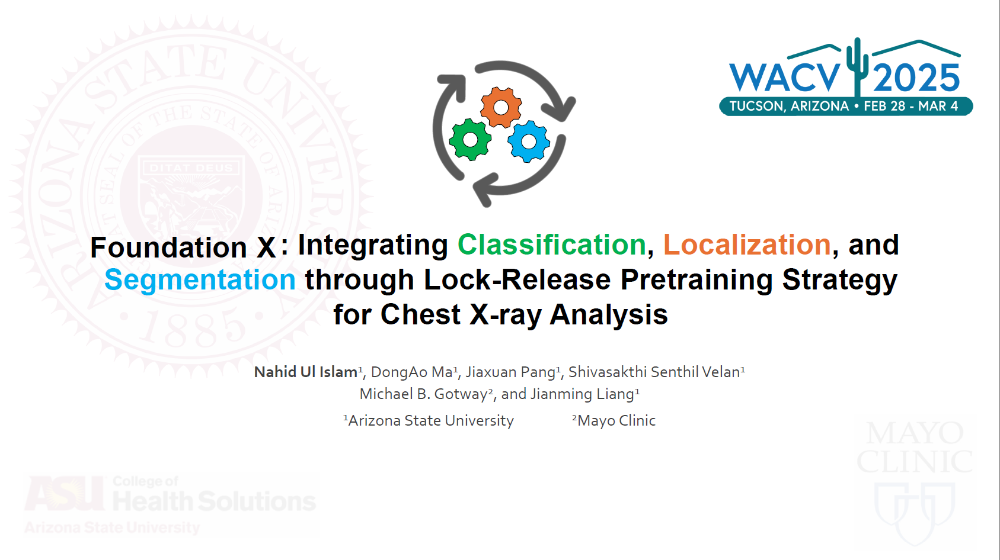
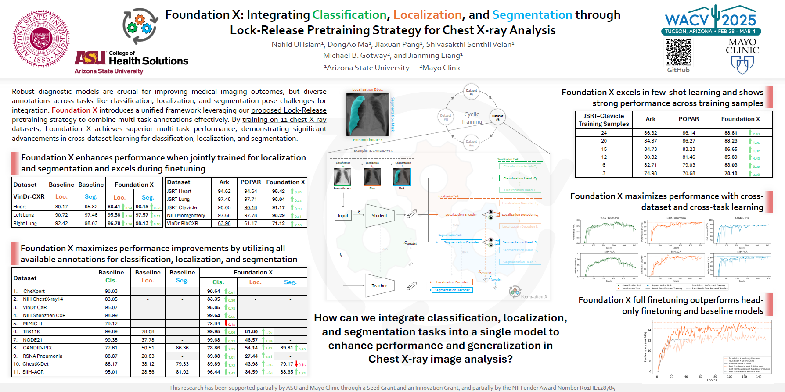

Foundation X: Integrating Classification, Localization, and Segmentation through Lock-Release Pretraining Strategy for Chest X-ray Analysis
Training deep learning models requires large annotated datasets, but annotations are heterogeneous across tasks and datasets. Foundation X is an end-to-end framework that trains a multi-task foundation model by leveraging diverse expert-level annotations from multiple public datasets. It introduces a Cyclic & Lock-Release pretraining strategy alongside a student-teacher learning paradigm to enhance knowledge retention while mitigating overfitting. Pretrained on 11 chest X-ray datasets (~826k images) spanning 11 classification, 6 localization, and 3 segmentation tasks, Foundation X integrates all three task types in a single model. It outperforms single-task baselines with average gains of +1.0% AUC, +8.4% mAP, and +3.7% Dice, and shows strong cross-dataset and cross-task generalization. The extended version, Foundation X+ (under review), adds Region-Guided ROI Alignment to transfer detection cues to segmentation.